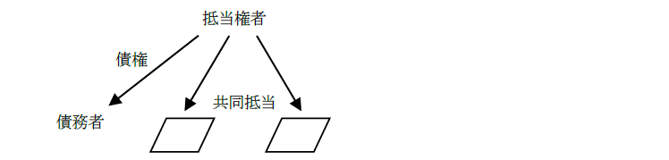
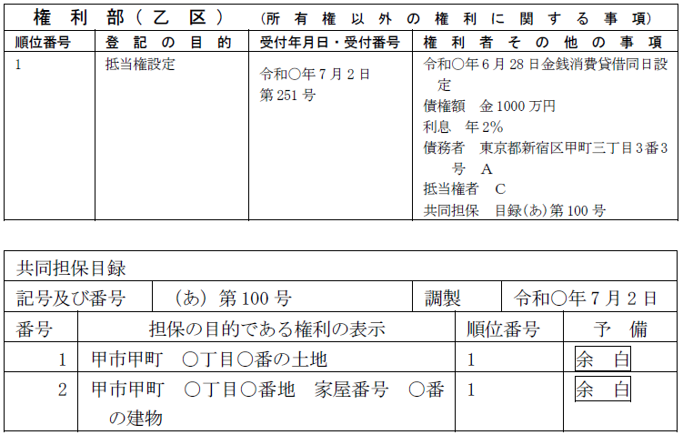
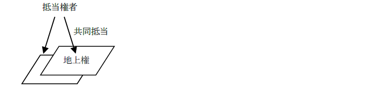
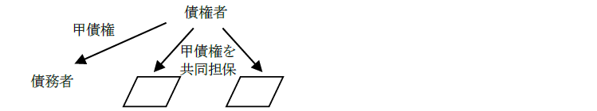
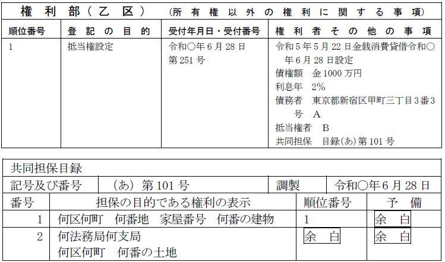
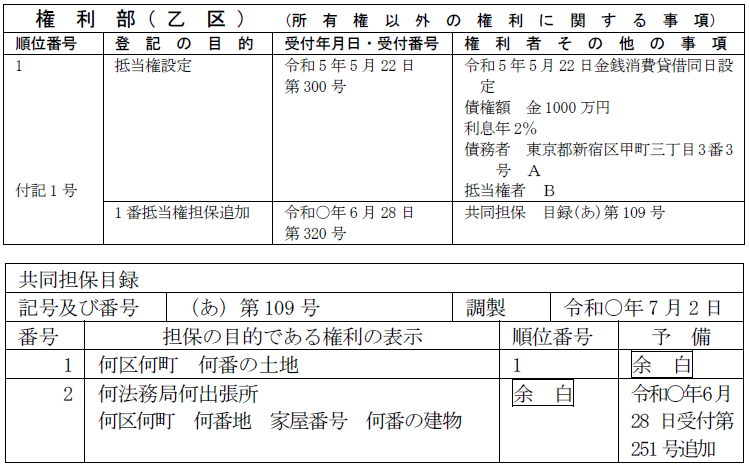
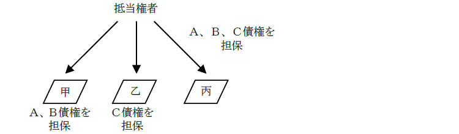
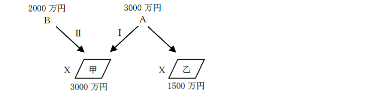

第１編 各 論
第２章 抵当権の登記
第１節 抵当権設定登記
1. 共同抵当権の設定（同時設定）

(1) 意義
共同抵当権とは、同一の債権の担保として、数個の不動産（地上権、永小作権、工場財団等を含む）の上に設定された抵当権をいう。
(2) 一の申請情報で申請することの可否
同一の登記所の管轄区域内にある2以上の不動産について、同一の債権を担保する抵当権に関する登記の目的が同一である登記の申請は、一の申請情報によってすることができる（不登令4条ただし書、不登規35条10号）。
日を異にして抵当権を設定した場合でも、同一の債権を担保するためのものであれば、同一の申請情報によって申請することができる（昭39.3.7民甲588）。
【申請例47 抵当権設定 共同抵当】
事例： 令和○年6月28日、Ａ、Ｂ及びＣは、債権者Ｃ、債務者Ａとして、金1000万円を利息年2％、弁済期日を令和36年6月28日で貸し付ける金銭消費貸借契約を締結し、金1000万円がＡに交付された。同時に、Ａ所有甲土地、ＡとＢが共有する乙建物のＡ持分及びＢ持分を目的として、この債権を担保するため、抵当権設定契約を締結した。甲土地及び乙建物は同一の登記所の管轄区域内にある。
【参考】不動産の表示
申請書の末尾に、以下のように不動産の表示を記載する。

(3) 申請情報の内容
(a) 登記の目的
登記の目的は、共同担保の関係にない抵当権の場合と同じく「抵当権設定」とする。
もっとも、単有の不動産と不動産の持分に共同抵当権を設定する場合には、「Ａ持分抵当権設定及び抵当権設定」等と記載する。
(b) 登記原因及びその日付
共同担保の関係にない抵当権の場合と同じである。
(c) 添付情報
通常の抵当権の場合と同じである。
(d) 不動産の表示の記載
① 一の申請情報で２以上の不動産について設定する共同抵当権の設定登記を申請する場合には、「当該二以上の不動産」を申請情報の内容としなければならない（83条1項4号、不登令別表55申請情報イ）。
→ 申請書の末尾に、不動産の表示を複数記載する。
② ２以上の不動産を目的とする場合において、当該不動産が異なる登記所の管轄区域内にあるときは、不動産の表示と他管轄の不動産の表示も記載しなければならない（不登令別表55申請情報イ括弧書）。
(e) 登録免許税
債権額×4/1000（登免法別表1.1.(5)）
(4) 共同担保目録
登記官は、2以上の不動産に関する権利を目的とするときは、当該2以上の不動産及び当該権利に関する事項を明らかにするため、共同担保目録を作成する（83条2項）。
(5) 登記申請の可否等
①不動産と工場財団を共同担保として抵当権を設定することができるか？
→ できる（工場抵当法14条1項参照）。この場合の登録免許税の税率は、低い方である2.5/1000が適用される。
②登記された船舶と不動産とを共同担保として抵当権を設定することができるか？
→ できない。
③土地（所有権）とその土地を目的とする地上権を共同担保として抵当権を登記することができるか？

→ できる。
④登記原因証明情報により、同一債権の担保として数個の不動産上に設定された共同抵当権であることが明らかであるときでも、そのうちの1個の不動産について、抵当権設定の登記を申請することができるか？
→ できる（昭30.4.30民甲835）。
⑤同一の債権を担保するため、同一の登記所の管轄区域内にある債務者所有の不動産と物上保証人所有の不動産に共同抵当権を設定した場合、一の申請情報で申請することができるか？

→ できる（不登規35条10号）。共同抵当に関する登記は、数個の不動産について登記の目的が同一であるならば、その不動産の所有者が異なっていても一括申請することができる（明32.6.29.民刑1191）。
登記の申請情報は、原則として登記の目的及び原因に応じて1個の不動産ごとに作成しなければならないが、共同担保関係という観点から便宜上一括申請をすることを認めている。
2. 共同抵当権の設定（追加設定）
(1) 意義
共同抵当権は、数個の不動産について、同時に設定する必要はない。当初は1個又は数個の抵当権を設定していたが、その後に同一の債権を担保するために他の不動産に抵当権を設定すること（追加設定）もできる。
【申請例48 抵当権設定 追加（他管轄）】
事例： 令和5年5月22日、ＡとＢは、債権者Ｂ、債務者Ａ（住所：東京都新宿区甲町三丁目3番3号）として、金1000万円を利息年2％、弁済期日を令和45年5月22日で貸し付ける金銭消費貸借契約を締結し、金1000万円がＡに交付され、同時に、Ａ所有甲土地に、この債権を担保するため、抵当権設定契約が締結され登記がなされた。令和○年6月28日、ＡとＢは、甲土地の乙区1番抵当権で担保されている債権を担保するため、Ａ所有乙建物について抵当権設定契約を締結した。甲土地及び乙建物は異なる登記所の管轄区域内にある。
【乙建物の登記記録】

【甲土地の登記記録】

(2) 申請情報の内容
(a) 登記の目的
追加設定の場合も「抵当権設定」とする。
(b) 登記原因及びその日付
被担保債権が発生した契約成立日と追加設定の契約成立日を記載する。
(c) 添付情報
通常の抵当権の場合と同じである。
(d) 不動産の表示の記載
追加設定の場合、前の登記に係る不動産を特定する事項及び当該抵当権の順位に関する事項を申請情報の内容としなければならない（不登令別表55申請情報ハ）。
→ 申請書の末尾に、既に抵当権の登記がされている不動産の表示、及び、既に登記されている抵当権の順位番号も記載する。
ただし、申請を受ける登記所に当該前の登記に係る共同担保目録がある場合には、当該共同担保目録の記号及び目録番号を申請情報の内容とすれば足りる（不登令別表55申請情報ハ括弧書、不登規168条1項）。
(e) 登録免許税
前登記証明書を提供すれば権利の件数×1500円（登免法13条2項）
提供がなければ債権額×1000分の4（登免法別表1.1.(5)）
減税を受けないのであれば前の登記に関する登記事項証明書を提供することを要しない。
(3) 共同担保目録
登記官は、2以上の不動産に関する権利を目的とするときは、当該2以上の不動産及び当該権利に関する事項を明らかにするため、共同担保目録を作成する（83条2項）。
なお、追加設定の登記の申請の場合には、当該登記の末尾に共同担保目録の記号及び目録番号を記録しなければならない（不登規168条2項）。
(4) 追加設定の可否
①既登記抵当権の追加担保として残存元本債権額と約定利息との合算額を併せて担保する（元利金担保）抵当権を設定することができるか？
→ できる。
②同一債権者の有するＡ、Ｂ、Ｃの3個の債権について甲土地にＡ、Ｂ債権、乙土地にＣ債権をそれぞれ各別に担保する抵当権が設定されている場合、丙土地上にＡ、Ｂ、Ｃ債権を一括して追加担保する一つの抵当権を設定することができるか？

→ できる（昭38.4.9民甲965）。
③抵当権の設定登記後に利率の引下げがあった場合において、利率の引下げによる抵当権変更の登記をしていないときでも、引下げ後の利率を申請情報の内容として抵当権の追加の設定登記を申請することができるか？
→ できる（昭41.12.1民甲3322）。
④抵当権の設定登記後に債務者の住所の変更があった場合において、債務者の住所変更の登記をしていないときでも、変更後の住所を申請情報の内容として抵当権の追加の設定登記を申請することができるか？
→ できる。共同根抵当権の追加設定のときとは、取り扱いが異なるので注意が必要である。
⑤登記された抵当権について被担保債権の一部が弁済された後、弁済後の残債権の額を債権額として、抵当権の追加の設定登記を申請することができるか？
→ できる。追加設定する抵当権の債権額は、既に登記された抵当権の債権額と一致していなくてもよい（昭38.1.29民甲310）。
第２節 抵当権移転
1. 相続・合併による抵当権の移転
抵当権者に相続又は合併（消滅法人となる場合に限る。）があった場合には、その被担保債権は相続人又は合併後の存続法人若しくは設立法人に移転する（民法896条本文、会社法750条1項等）。そのため、随伴性により、抵当権も相続人又は合併後の存続法人若しくは設立法人に当然に移転する。
【申請例49 抵当権移転 相続】
事例： 令和○年6月28日、甲土地の1番抵当権（被担保債権額金1000万円）の抵当権者Ａが、死亡した。Ａの死亡時、Ａには、妻Ｂ、子Ｃがいた。
2. 登記申請の手続
(1) 申請情報の内容（相続）
(a) 登記原因及びその日付
登記原因は「年月日相続」と記載し、日付は被相続人の死亡日を記載する。
(b) 申請人
一般承継人（相続人）による単独申請である（63条2項）。
相続人が複数ある場合には、その持分を表示する。
・相続分を超える遺贈を受けた相続人は相続を原因とする抵当権移転登記の申請人とはならない。相続分を超える遺贈を受けた相続人はその相続分を受けることができないからである（民法903条2項）。
(c) 添付情報
・登記原因証明情報（61条）
具体的には、被相続人の戸籍謄本等及び相続人の戸籍抄本等となる。これは、被相続人の死亡により、相続人が被担保債権を取得したことを証し、かつ、法定相続人を特定するためである。
(d) 登録免許税
債権額×1/1000
【申請例50 合併を原因とする抵当権移転の登記】
(2) 申請情報の内容（合併）
(a) 登記原因及びその日付
登記原因は「年月日合併」と記載し、日付は合併の効力発生日を記載する。
(b) 申請人
一般承継人（吸収合併存続会社・新設合併設立会社）による単独申請である（63条2項）。
(c) 添付情報
・登記原因証明情報（61条）
具体的には、新設合併の場合においては、合併の記載がある新設会社の登記事項証明書、吸収合併の場合においては、合併の記載がある吸収合併存続会社の登記事項証明書が登記原因証明情報となる（不登令別表22添付情報）。
※登記事項証明書の代わりに、会社法人等番号を提供することができる（平27.10.23民2.512）。
(d) 登録免許税
債権額×1/1000
1. 債権譲渡
(1) 債権譲渡による抵当権の移転
抵当権の被担保債権が債権譲渡によって移転したときは、抵当権は随伴性を有するので、抵当権も当然に移転するのが原則である。
【申請例51 抵当権移転 債権譲渡】
事例： 令和○年6月28日、ＣとＥは、抵当権者Ｃの甲土地の乙区1番抵当権の被担保債権を譲渡する贈与契約を締結した。同月29日、譲渡の事実を記載した内容証明郵便が債務者Ａに到達した。
2. 登記申請手続
(1) 申請情報の内容
(a) 登記原因及びその日付
登記原因には「年月日債権譲渡」と記載し、日付は譲渡日を記載する。
債権の一部を譲渡した場合には、「年月日債権一部譲渡」と記載する。
(b) 添付情報
※債権譲渡についての、譲渡人による債務者への通知又は債務者の承諾があったことを証する情報を提供する必要はない。
(c) 登録免許税
債権額×2/1000
債権の一部を譲渡した場合：移転した債権額×2/1000
(2) 対抗要件
債権譲渡の対抗要件は、譲渡人による債務者への通知又は債務者の承諾である（民法467条）。そして、抵当権の移転の対抗要件は、登記であるが（民法177条）、抵当権の移転について対抗要件を備えても、上記の債権譲渡の対抗要件を備えなければ、債務者その他の第三者に対して、抵当権の移転の主張をすることができない（大判大10.2.9）。
(3) 登記申請の可否
① 複数の者が共同で抵当権の移転を受けた場合、抵当権の移転の登記を申請するときの申請情報には、登記権利者ごとの被担保債権の持分を記録しなければならないか？
→ 記録しなければならない（59条4号）。
② 連帯債務者Ａ、Ｂ及びＣに対する債権を被担保債権として抵当権が設定されている場合において、そのうちＡに対する債権のみが第三者に譲渡されたときは、抵当権の一部移転の登記を申請することができるか？
→ できる（平9.12.4民3.2155）。この場合の登記原因及びその日付は「年月日債権譲渡（連帯債務者Ａに係る債権）」のように記載する。
1. 代位弁済
債務者のために弁済をした者は、債権者に代位する（民法499条）。
債務者に代わって弁済した者が債務者に対して求償権を取得した場合、抵当権は、その被担保債権とともに弁済者に移転する（民法501条）。
【申請例52 抵当権移転 代位弁済】
事例： 令和○年6月28日、甲土地の1番抵当権の被担保債権の保証人Ｃは、抵当権者Ｂの同意を得て、抵当権者Ｂに対して、当該抵当権の被担保債権金1000万円の全額を弁済した。
2. 登記申請の手続
(1) 申請情報の内容
(a) 登記原因及びその日付
登記原因は「年月日代位弁済」と記載し、日付は弁済日を記載する。
債権の一部の弁済の場合には、「年月日一部代位弁済」と記載する。
(b) 登記事項
一部弁済による代位の場合には、弁済額を申請情報の内容とする。
(2) 登記申請の可否
① 債務者以外の者が抵当権の被担保債権の一部を弁済した場合、抵当権の一部の移転の登記の申請をすることができるか？
→ できる（登研116P.39）。
被担保債権の一部を債務者以外の者が代位弁済した場合、主たる債務者に求償することができる範囲内において、弁済した被担保債権の一部が代位者に移転するとともに、抵当権の一部も移転するため（民法502条）、抵当権一部移転の登記をすることができる。
【申請例53 抵当権一部移転 一部代位弁済】
事例： 令和○年6月28日、甲土地の1番抵当権の被担保債権の保証人Ｃは、抵当権者Ｂに対して、当該抵当権の被担保債権金1000万円のうち金500万円を弁済した。
1. 会社分割による抵当権の移転
抵当権者が分割会社である場合において、会社分割によりその被担保債権が
承継会社又は設立会社に移転したときは（会社法759条1項、764条1項等）、随伴性により、抵当権も承継会社又は設立会社に移転する。
被担保債権を移転させるには、その旨を吸収分割契約書又は新設分割計画書に記載する必要がある。
2. 申請情報の内容
(1) 登記原因及びその日付
登記原因は、「年月日会社分割」と記載し、日付は会社分割の効力が発生した日を記載する（平18.3.29民2.755）。
(2) 申請人
登記権利者：承継会社又は設立会社
登記義務者：分割会社
(3) 添付情報
①登記原因証明情報（61条）
承継会社の登記事項証明書（※）及び当該抵当権の被担保債権が承継されたことを証する分割契約書（又は分割計画書）を提供する（平18.3.29民755）。
※ 登記事項証明書の代わりに、会社法人等番号を提供することができる（平27.10.23民2.512）。
②登記識別情報（22条本文）
登記義務者の抵当権設定（取得）の際の登記識別情報を提供する。
1. 持分放棄による抵当権の移転
抵当権の（準）共有者がその持分を放棄すれば、その持分は他の（準）共有者に帰属する（民法264条、255条）。
【申請例54 抵当権持分移転 抵当権持分放棄】
事例： 甲土地の1番抵当権者Ａが死亡し、ＢＣが相続による抵当権移転登記（被担保債権額金2000万円）をした後、Ｂが、令和○年6月28日、自己の抵当権の持分（持分2分の1）を放棄する意思表示をした。
2. 申請情報の内容
(1) 登記の目的
「○番抵当権Ｂ持分移転」と記載する。
(2) 登記原因及びその日付
登記原因は「年月日抵当権持分放棄」と記載し、日付は放棄の意思表示をした日を記載する。
(3) 登録免許税
債権額×2/1000（登免法別表1.1.(6)ロ）
1. 意義
抵当権者が共同抵当の目的不動産の一方にのみ抵当権を実行したとき（異時配当）は、抵当権者はその代価につき債権の全部の弁済を受けられる（民法392条２項前段）。この場合、競売された不動産についての後順位抵当権者は、同時配当がなされたならば配当を受けたであろう額の限度で、競売されなかった方の不動産に代位することができる（民法392条２項後段）。
2. 具体例
例えば、以下の図の事例において、Ａが甲土地の抵当権のみを実行した場合、Ａは甲土地の売却代金から3000万円の弁済を受けることになるが、後順位のＢは、本来同時配当がなされていれば、甲土地の代金から受けることができた金額（1000万円）について乙土地のＡの抵当権に代位することができる。この場合、Ｂを登記権利者、Ａを登記義務者として「年月日民法第392条第2項による代位」を原因とする1番抵当権代位の登記を申請することができる。

【申請例55 民法第392条第2項による代位の登記】
・Ａ名義の抵当権設定登記がされている不動産について、真正な登記名義の回復を原因としてＢ名義への抵当権移転の登記を申請することはできるか？
→ できない（昭40.7.13民甲1857）。
被担保債権を有さない者を抵当権者とする抵当権は無効であること、所有権と異なり、抵当権は同一の不動産上に順位は異なるとしても、複数の抵当権を設定できることから、移転の付記登記のない抵当権の登記について、真正な登記名義の回復を登記原因とする抵当権移転の登記を申請することはできない。
※ 移転の付記登記のある抵当権の登記の場合、前抵当権登記名義人への真正な登記名義の回復を登記原因とする抵当権移転の登記を申請できる。抵当権自体は有効に成立しているからである。